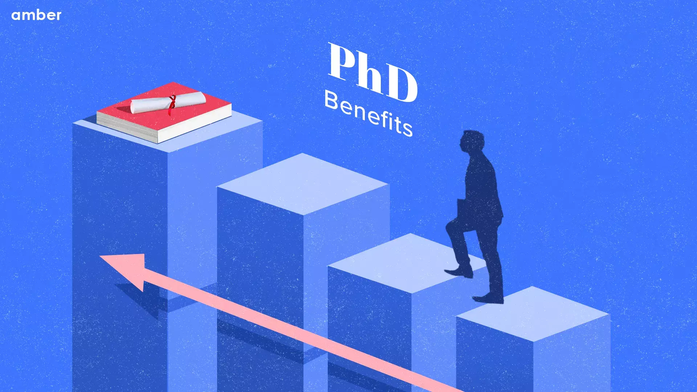
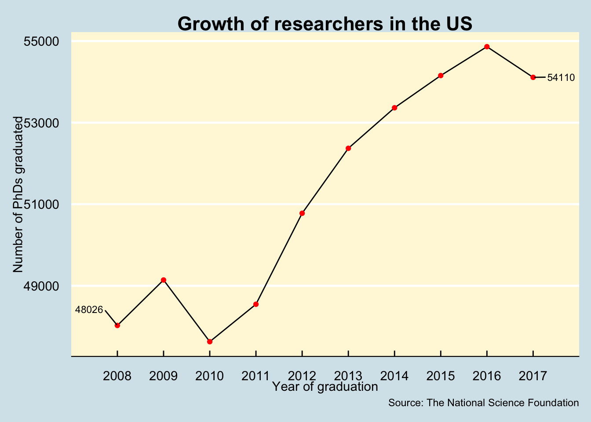
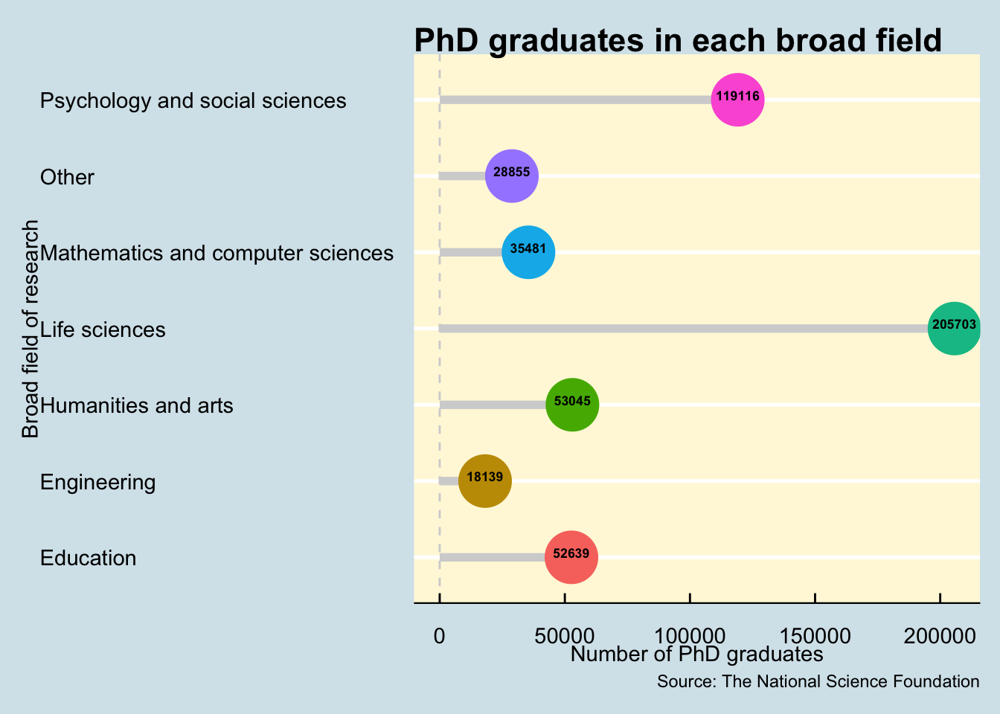
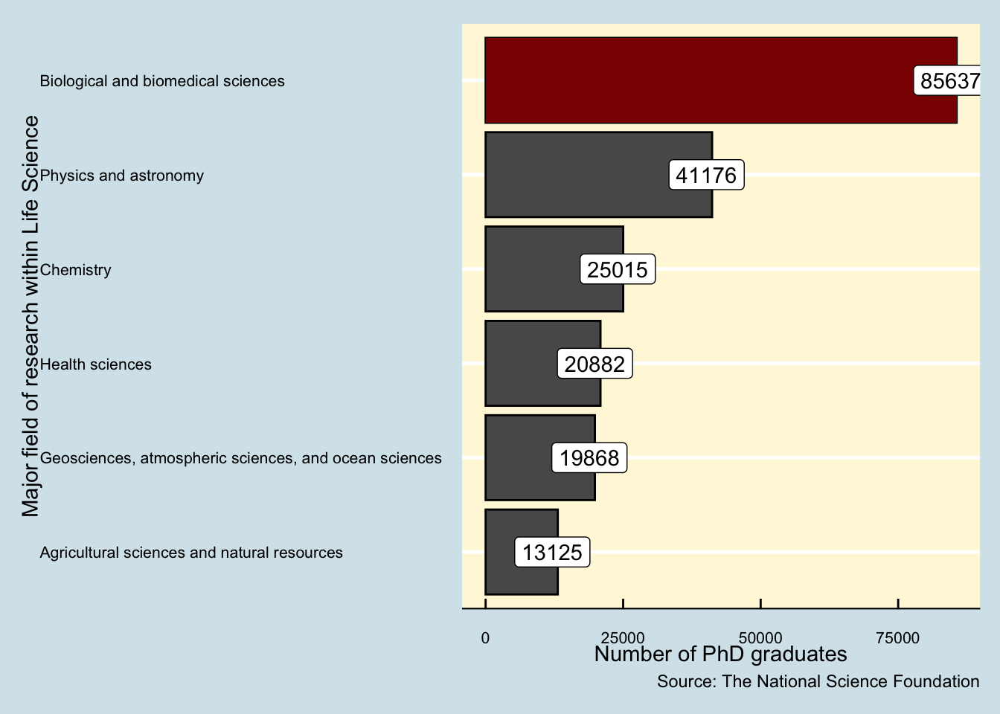
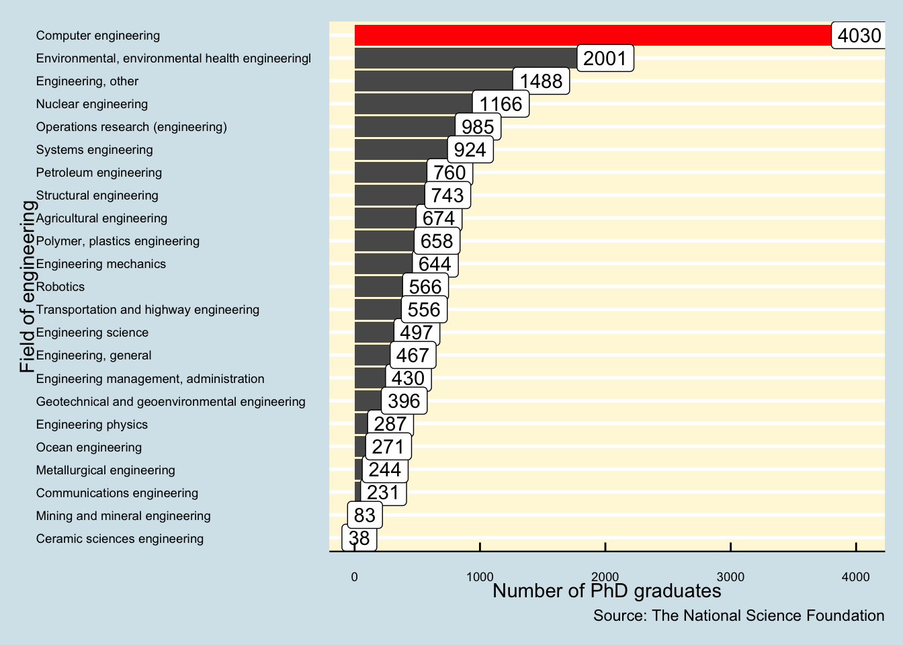

| broad_field | major_field | field | year | n_phds |
|---|---|---|---|---|
| Life sciences | Agricultural sciences and natural resources | Agricultural economics | 2008 | 111 |
| Life sciences | Agricultural sciences and natural resources | Agricultural and horticultural plant breeding | 2008 | 28 |
| Life sciences | Agricultural sciences and natural resources | Agricultural animal breeding | 2008 | 3 |
| Life sciences | Agricultural sciences and natural resources | Agronomy and crop science | 2008 | 68 |
| Life sciences | Agricultural sciences and natural resources | Animal nutrition | 2008 | 41 |
| Life sciences | Agricultural sciences and natural resources | Animal science, poultry or avian | 2008 | 18 |

1 Introduction
For years, the United States have boasted to be one of the biggest and the best education providers around the world. While being the best education provider maybe a subjective title, however, the universities and organisations of the US can definitely take the credit for grooming some of the best researchers around the world with a total of 954 Nobel Laureates in the country. This by no means is an ordinary feat. There have been multiple studies such as the one by Brint and Clotfelter (2016) to investigate what drives the American education sector to be so effective. McAlpine, Castello, and Pyhaltö (2020) have reported that the trajectory of higher educations are on the rise as there are more industrial collaborations and fundings in today’s time than it ever was the case.
As a result, the United States have been successful to recruit some of the best minds in the world. A large number of researchers and the leading scientists at organisations in The United States are immigrants. This has also added a multi-cultural diversity among the higher education cohorts, leading to a more inclusive environment.
The current study aims to delineate the diversity of the field of research in the United States. This study would additionally investigate the temporal trends of the rise of PhD graduates and the popular fields among the graduating cohorts and whether we can observe any specific pattern.
Anyone starting out to research for a doctorate degree should remember that hours of self centered work has the ability to be the spark for others to progress. All research is potentially useful to open doors or show others that door does not lead anywhere useful. Advancements happen by building on others research.
- Ian .R. McAndrew
Note
If you’re interested to look into the R-code which went into analysing the current report, please feel free to go through the markdown files on my GitHub repository.
I have also created an R-shiny application to visualise and analyse the current data. Feel free to check it out here.
2 Where is the data coming from 💁♂️ ?
Before we proceed further with our analysis, it is important to figure out the source and the authenticity of the data.
The data for the fields of research of the various graduating PhDs have been released by The National Science Foundation (NSF) and can be downloaded from the GitHub repository of TidyTuesday.
3 How does the data look like 🔍 ?
Once we have ascertained the source and authenticity of our data, we will now obtain a glimpse of the dataset. The dataset contains a total of 3370 rows and 5 columns.
4 What does the data mean 🤔 ?
Once the data has been read in and checked though Table 1, let us understand what do these variables mean. The metadata for the dataset has been described through Table 2.
| Variable | Class | Description |
|---|---|---|
| broad_field | character | The broad field of research |
| major_field | character | Major field within the broad field of research |
| field | character | Specific field within the major field of research |
| year | double | Year of graduation |
| n_phds | double | Number of PhD graduates for the corresponding year |
5 What insights can we gain from the data 🎯📊?
For a very long time, the United States have produced the leading researchers in the world. One of the major reasons for this is due to the significant endowment funds and grants available at the universities which allows them to recruit some of the best researchers around the world. The following sections will delineate the various aspects of the current analysis to understand the meteoric rise of the researchers by studying the number of PhDs graduating each year and the fields they are graduating in.
5.1 Are we observing a rise in the popularity of research ?
While the universities and research labs across the United States have historically produced some of the best researchers in the world, it is important to study the growth of these researchers. One of the ways to do so would be through analysing the number of graduating PhDs in the various fields of research.

As illustrated through Figure 1, we can observe a trend of rising PhD graduates in the United States. Between the years of 2008 to 2017, apart from the year of 2010, there has been a constant rise in the number of PhD students graduating across the various universities and research labs in the country. Since 2008 to 2017, we can observe a 12.6 % rise in the total number of graduating PhD students as per the statistics released by The National Science Foundation (NSF). The rise in these numbers can be attributed to the funding received in various fields of research, leading to higher recruitment and consequently, higher number of PhD graduates. This additionally makes the United States a very attractive study destination for the rest of the world. As a result, we can definitely observe a rise in the popularity of the research field in The United States of America.
5.2 Which fields of research are these PhDs graduating in ?
In this section, we shall investigate the popular areas of research. While there has been an overall rise in the number of graduating PhDs as explained in Section 5.1, however, not all broad fields of research may observe the same growth in popularity. Figure 2 illustrates the distribution of the total number of PhD graduates in each of the broad fields of research. We can observe that the field of Life Sciences attracts the highest number of PhDs while the least number of PhD graduates can be observed in the STEM field of Engineering.
The results corroborate with the findings of Meirmans et al. (2019) who have identified the field of biological life sciences to be the one with the highest fundings worldwide as these researches are directly related to various answering some of the toughest challenges to mankind such as curing cancer, eradication of polio, epidemic research as such COVID-19, and many such critical studies.
On the other hand, the field of engineering is observed to attract the least number of researchers. A part of the reason maybe due to the vast number of opportunities in the industry or the corporate which tends to attract more number of engineering graduates rather than the field of research.

5.3 A deeper look into the field of Life Sciences 🔬 !
Now that we have established the broad field of Life Sciences to be the one with the most number of PhD graduates,let us look deeper into this field and whether we can break down the distribution further.

Figure 3 illustrates distribution of the PhD graduates within the broad field of Life Sciences. As we can observe, there is indeed an uneven distribution of graduates in the various major fields of Life Sciences. We can observe that the number of graduates in the domain of biological and biomedical sciences is more than double the number of students in the second most popular field which is the field of Physics and astronomy.
This clearly suggests that the requirement for researchers and the funding available in the major field of biological and biomedical sciences is considerable higher than any other major field of Life Sciences.
5.4 How is the distribution amongst the engineering graduates ✈️ ⚙️?
Now that we have looked into the most popular field of research in Section 5.3, let us now investigate the distribution of PhD graduates in the field with the least number of total PhD graduates, which is the field of engineering.

Figure 4 illustrates a far larger number of fields within the field of Engineering when compared to Life Sciences. However, similar to the distribution of Life Sciences, the PhD graduates in the field of Engineering are unevenly distributed with a clear trend in popularity for specific fields. As we can observe, the number of researchers in the field of Computer Engineering is much higher than the next popular field of Environmental Engineering.
This can be attributed to the recent advancements in the field of Artificial Intelligence (AI), Machine Learning (ML), Data Science, and many more state of the art technologies
6 What are our key takeaways 📈?
Based on our analysis in Section 5, following are our key takeaways:
Since the year of 2008, there has been a rise in the number of graduating PhDs in the United States across various fields of research. Based on the data provided and various studies, the increase in the number of graduates can be attributed to the higher funds sanctioned across various universities and research labs, which consequently leads to higher recruitment of doctoral candidates and hence, the expected rise in the popularity of research.
While the number of PhD candidates in the United States have increased as a whole, however, the field of Life Sciences was adjudged as the most popular field of research. On the other hand, the field of Engineering observed to have recruited the least number of PhD candidates for the same duration.
Within the field of Life Sciences, the growth in the number of doctoral candidates between 2006-2017 was observed to be unevenly distributed across the multiple major fields. The major field of Biological and Biomedical sciences was observed to be clearly the hottest area of research with more than double the number of PhD candidates compared to its closest competitor which was Physics and Astronomy.
Similar to the field of Life Sciences, the broad field of Engineering also observed an uneven distribution of PhD researchers with a clear trend of inclination towards the field of Computer Engineering. This can be attributed to the vast fundings received for projects involving AI,ML,Data Science and similar state of the art technologies.
Session information
─ Session info ───────────────────────────────────────────────────────────────
setting value
version R version 4.3.0 (2023-04-21)
os macOS 14.3
system x86_64, darwin20
ui X11
language (EN)
collate en_US.UTF-8
ctype en_US.UTF-8
tz Asia/Kolkata
date 2024-02-02
pandoc 3.1.1 @ /Applications/RStudio.app/Contents/Resources/app/quarto/bin/tools/ (via rmarkdown)
─ Packages ───────────────────────────────────────────────────────────────────
package * version date (UTC) lib source
abind 1.4-5 2016-07-21 [1] CRAN (R 4.3.0)
backports 1.4.1 2021-12-13 [1] CRAN (R 4.3.0)
bit 4.0.5 2022-11-15 [1] CRAN (R 4.3.0)
bit64 4.0.5 2020-08-30 [1] CRAN (R 4.3.0)
broom 1.0.5 2023-06-09 [1] CRAN (R 4.3.0)
car 3.1-2 2023-03-30 [1] CRAN (R 4.3.0)
carData 3.0-5 2022-01-06 [1] CRAN (R 4.3.0)
cli 3.6.1 2023-03-23 [1] CRAN (R 4.3.0)
colorspace 2.1-0 2023-01-23 [1] CRAN (R 4.3.0)
crayon 1.5.2 2022-09-29 [1] CRAN (R 4.3.0)
data.table 1.14.8 2023-02-17 [1] CRAN (R 4.3.0)
digest 0.6.34 2024-01-11 [1] CRAN (R 4.3.0)
dplyr * 1.1.3 2023-09-03 [1] CRAN (R 4.3.0)
DT * 0.28 2023-05-18 [1] CRAN (R 4.3.0)
evaluate 0.22 2023-09-29 [1] CRAN (R 4.3.0)
fansi 1.0.5 2023-10-08 [1] CRAN (R 4.3.0)
farver 2.1.1 2022-07-06 [1] CRAN (R 4.3.0)
fastmap 1.1.1 2023-02-24 [1] CRAN (R 4.3.0)
forcats * 1.0.0 2023-01-29 [1] CRAN (R 4.3.0)
generics 0.1.3 2022-07-05 [1] CRAN (R 4.3.0)
ggplot2 * 3.4.4 2023-10-12 [1] CRAN (R 4.3.0)
ggpubr * 0.6.0 2023-02-10 [1] CRAN (R 4.3.0)
ggrepel * 0.9.3 2023-02-03 [1] CRAN (R 4.3.0)
ggsignif 0.6.4 2022-10-13 [1] CRAN (R 4.3.0)
ggthemes * 4.2.4 2021-01-20 [1] CRAN (R 4.3.0)
glue 1.6.2 2022-02-24 [1] CRAN (R 4.3.0)
gtable 0.3.4 2023-08-21 [1] CRAN (R 4.3.0)
highr 0.10 2022-12-22 [1] CRAN (R 4.3.0)
hms 1.1.3 2023-03-21 [1] CRAN (R 4.3.0)
htmltools 0.5.6.1 2023-10-06 [1] CRAN (R 4.3.0)
htmlwidgets 1.6.2 2023-03-17 [1] CRAN (R 4.3.0)
httr 1.4.7 2023-08-15 [1] CRAN (R 4.3.0)
jsonlite 1.8.7 2023-06-29 [1] CRAN (R 4.3.0)
kableExtra * 1.3.4 2021-02-20 [1] CRAN (R 4.3.0)
knitr 1.44 2023-09-11 [1] CRAN (R 4.3.0)
labeling 0.4.3 2023-08-29 [1] CRAN (R 4.3.0)
lazyeval 0.2.2 2019-03-15 [1] CRAN (R 4.3.0)
lifecycle 1.0.3 2022-10-07 [1] CRAN (R 4.3.0)
lubridate * 1.9.3 2023-09-27 [1] CRAN (R 4.3.0)
magrittr 2.0.3 2022-03-30 [1] CRAN (R 4.3.0)
munsell 0.5.0 2018-06-12 [1] CRAN (R 4.3.0)
patchwork * 1.1.3 2023-08-14 [1] CRAN (R 4.3.0)
pillar 1.9.0 2023-03-22 [1] CRAN (R 4.3.0)
pkgconfig 2.0.3 2019-09-22 [1] CRAN (R 4.3.0)
plotly * 4.10.2 2023-06-03 [1] CRAN (R 4.3.0)
purrr * 1.0.2 2023-08-10 [1] CRAN (R 4.3.0)
R6 2.5.1 2021-08-19 [1] CRAN (R 4.3.0)
Rcpp 1.0.11 2023-07-06 [1] CRAN (R 4.3.0)
readr * 2.1.4 2023-02-10 [1] CRAN (R 4.3.0)
rlang 1.1.1 2023-04-28 [1] CRAN (R 4.3.0)
rmarkdown 2.25 2023-09-18 [1] CRAN (R 4.3.0)
rstatix 0.7.2 2023-02-01 [1] CRAN (R 4.3.0)
rstudioapi 0.15.0 2023-07-07 [1] CRAN (R 4.3.0)
rvest 1.0.3 2022-08-19 [1] CRAN (R 4.3.0)
scales * 1.2.1 2022-08-20 [1] CRAN (R 4.3.0)
sessioninfo * 1.2.2 2021-12-06 [1] CRAN (R 4.3.0)
stringi 1.7.12 2023-01-11 [1] CRAN (R 4.3.0)
stringr * 1.5.0 2022-12-02 [1] CRAN (R 4.3.0)
svglite 2.1.1 2023-01-10 [1] CRAN (R 4.3.0)
systemfonts 1.0.4 2022-02-11 [1] CRAN (R 4.3.0)
tibble * 3.2.1 2023-03-20 [1] CRAN (R 4.3.0)
tidyr * 1.3.0 2023-01-24 [1] CRAN (R 4.3.0)
tidyselect 1.2.0 2022-10-10 [1] CRAN (R 4.3.0)
tidyverse * 2.0.0 2023-02-22 [1] CRAN (R 4.3.0)
timechange 0.2.0 2023-01-11 [1] CRAN (R 4.3.0)
tzdb 0.4.0 2023-05-12 [1] CRAN (R 4.3.0)
utf8 1.2.3 2023-01-31 [1] CRAN (R 4.3.0)
vctrs 0.6.4 2023-10-12 [1] CRAN (R 4.3.0)
viridisLite 0.4.2 2023-05-02 [1] CRAN (R 4.3.0)
vroom 1.6.4 2023-10-02 [1] CRAN (R 4.3.0)
webshot 0.5.5 2023-06-26 [1] CRAN (R 4.3.0)
withr 2.5.1 2023-09-26 [1] CRAN (R 4.3.0)
xfun 0.40 2023-08-09 [1] CRAN (R 4.3.0)
xml2 1.3.5 2023-07-06 [1] CRAN (R 4.3.0)
yaml 2.3.7 2023-01-23 [1] CRAN (R 4.3.0)
[1] /Library/Frameworks/R.framework/Versions/4.3-x86_64/Resources/library
──────────────────────────────────────────────────────────────────────────────References
Brint, Steven, and Charles T Clotfelter. 2016. “US Higher Education Effectiveness.” RSF: The Russell Sage Foundation Journal of the Social Sciences 2 (1): 2–37.
McAlpine, Lynn, Montserrat Castello, and Kirsi Pyhaltö. 2020. “What Influences PhD Graduate Trajectories During the Degree: A Research-Based Policy Agenda.” Higher Education 80 (6): 1011–43.
Meirmans, Stephanie, Roger K Butlin, Anne Charmantier, Jan Engelstädter, Astrid T Groot, Kayla C King, Hanna Kokko, Jane M Reid, and Maurine Neiman. 2019. “Science Policies: How Should Science Funding Be Allocated? An Evolutionary Biologists’ Perspective.” Journal of Evolutionary Biology 32 (8): 754–68.